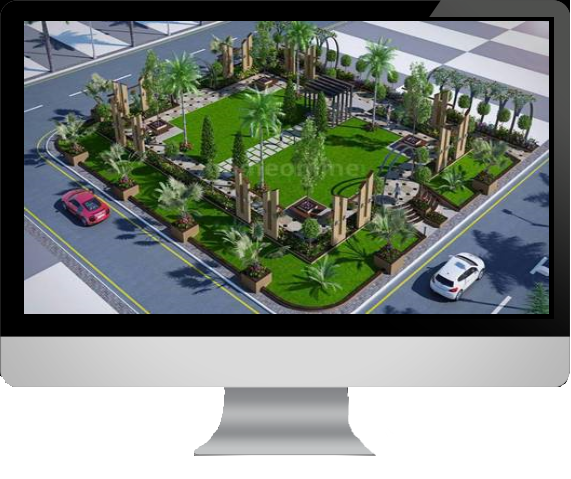

About Indore
Indore is a city in west-central India. It’s known for the 7-story Rajwada Palace and the Lal Baag Palace, which date back to Indore’s 19th-century Holkar dynasty. The Holkar rulers are honored by a cluster of tombs and cenotaphs at Chhatri Baag. The night market Sarafa Bazar sells street food. East is the Indo-Gothic Gandhi Hall and clock tower. The Jain temple Kanch Mandir has a mirrored mosaic interior
People & Culture Of Indore
Culture of Indore is an exclusive mixture of different cultures makes it a best destination across the country. You will be fascinated to watch the royalty and innocence of the city. Indore has changed drastically, today the major population of Indore belongs to different parts of India. Indore has welcomed people from all castes, creed and color. The local people of Indore reflect the true spirit of unity in diversity. To know more about the people and culture of Indore

Food In Indore
The diverse culture of Indore is quite visible even in the food habits of people. Due to the good flavor, taste as well as variety of food in Indore, it is praised by food lovers all across the country. Indore is known for its popular variety of Namkeens. They are an integral part of the cuisine of Indore.Besides restaurants, Sarafa and Chappan Dukan of indore also offer delight food for the fan of good vegetarian food. To know more about the restaurants and street food of Indore
Transportation In Indore
Indore is well connected via rail, road and air transport services. To travel locally in Indore there are both government and private transportation including I-bus, taxis, tele-auto rickshaw, mopeds and bicycles and even Tonga which will help you to move around and explore the city. The transportation in Indore is extremely safe, wallet-friendly and comfortable. Get information on transportation in Indore and make moving easier. To know more about transportation in Indore

Opportunities In Indore
With around development in Indore, the Indore city is seen to be a great choice of investment from various MNC, real estate developers, organizations and enterprenuers . Indore city quenches this investment interest due to its rapidly development in IT sectors, hospitality, commerce houses and other alight services. Giant Indian companies like Infosys and TCS have started the construction of their respective offices in Indore near Super Corridor. Both the companies are approximately 5 km from Indore airport. It is believed to create about 1 lacks jobs in coming 5–6 years. As the city is growing exponentially it gives immense scope to all of us to explore and to contribute to the many happening things which are all about Indore.

Accommodation In Indore
A good accommodation always makes you feel relaxed, especially when you are away from your home. Get all the necessary and basic information on best accommodation, hotels, hostels, rooms and brokers in Indore to help you find the best place in Indore. To know more about accommodation in Indore

- 
-

-